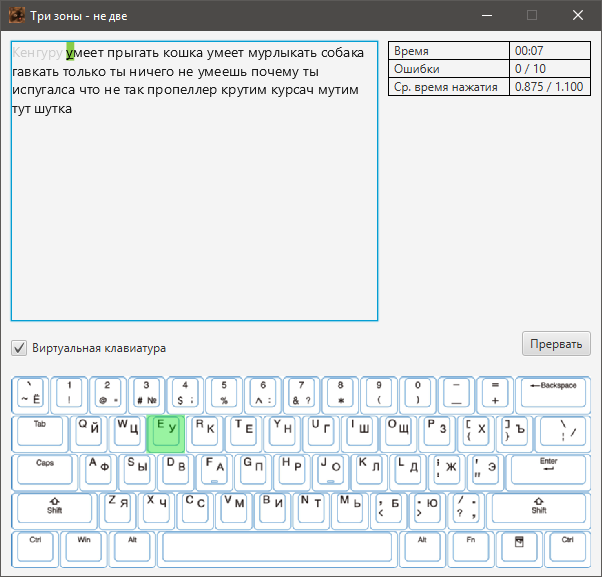

После выбора упражнения и нажатия на кнопку "Начать" перед Вами появится следующее окно. Опишем каждый его элемент:

Окно ввода
Слева Вы можете увидеть окно ввода упражнения. Изначально все символы чёрного цвета, но по мере прохождения они будут окрашиваться в серый цвет. Текущий символ окрашен в зелёный цвет, и, если Вы совершили ошибку, он окрасится в красный цвет, а счётчик ошибок увеличится.
Прогресс прохождения
Справа Вы можете увидеть прогресс прохождения. В нём указаны допустимые значения среднего времени нажатия и количсетва ошибок. Будьте внимательны и не позволяйте текущим значениям перейти за границы, иначе прождение упражнения завершится неудачей.
Виртуальная клавиатура
Если Вам нужна помощь в прохождении упражнения, то Вы можете включить виртуальную клавиатуру. Она подсветит Вам текущий символ и покажет его расположение на клавиатуре. Для её включения достаточно поставить галочку в соотвествующем окошке.
Прерывание прохождения
Если Вам вдруг потребовалось прервать прохождение, то нажмите кнопку "Прервать". Это завершит прохождение с неудачным результатом.